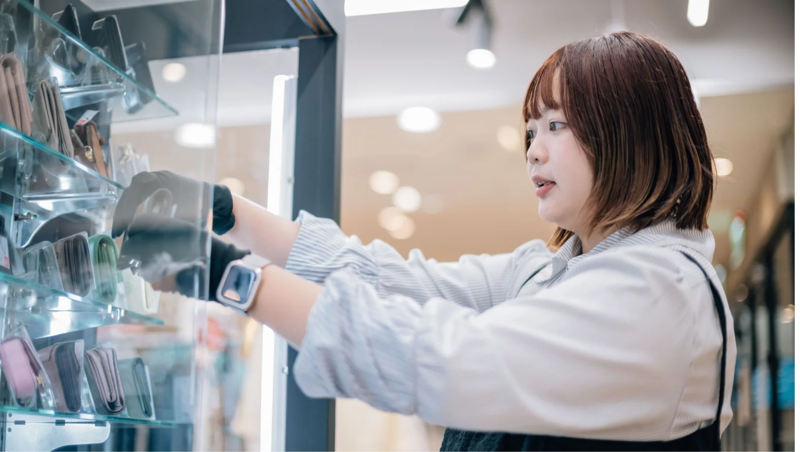
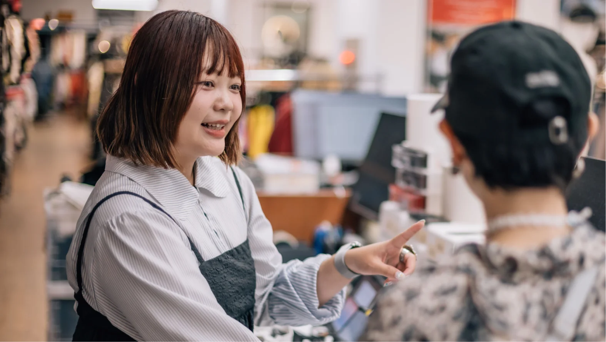

Staff Interview
在您目前的職位上，哪一個具體瞬間讓您感到最充實，並確信這份工作很有意義？
最充實的瞬間，是看見在第一線服務的店鋪夥伴，深刻實踐「Be Customer」的精神。當看到我們所做的決策被完整體現、化為店鋪的實質行動，並成功為顧客帶來「WAKU WAKU」的驚喜體驗時，我便能切實感受到：我們正被顧客深深需要著。
當店鋪因為這些行動帶來業績的提升，同時收穫顧客的滿意與笑容時，這一切，都讓我更加確信這份工作無可取代的意義。
Staff Interview
最充實的瞬間，是看見在第一線服務的店鋪夥伴，深刻實踐「Be Customer」的精神。當看到我們所做的決策被完整體現、化為店鋪的實質行動，並成功為顧客帶來「WAKU WAKU」的驚喜體驗時，我便能切實感受到：我們正被顧客深深需要著。
當店鋪因為這些行動帶來業績的提升，同時收穫顧客的滿意與笑容時，這一切，都讓我更加確信這份工作無可取代的意義。

我覺得自己最大的思維轉變，是學會從解決問題到「定義問題」、從單一思考到「全局視角」，並從過去的被動接收指示，跨越到主動管理店鋪。回想過去還在摸索的自己，對於業務執行的方向、人員管理與現場掌控，確實缺乏全面的概念。
但透過公司階段性的培育，以及前輩們的提拔與支持，讓我有了清晰的學習榜樣，並以此為目標，在跨越無數課題中逐漸成熟。
時至今日我深信，成為一名管理者，必須具備足夠的影響力，並活出一個值得被他人借鏡、學習的標竿價值。

「延續生命週期、創造情感價值」——這是我認為REUSE存在最有意義的理由。
每件物品都曾備受珍惜與喜愛，當它在第一任主人身邊的生命週期步入尾聲時，REUSE的力量，便能重新賦予它循環不息的能量，繼續開創無限可能。
因此，在日常工作與每一次抉擇中，我始終秉持「Be Customer」的精神，用最貼近顧客的視角，去設身處地體會他們的感受，並將這份同理心落實在業務決策上。
我們賦予物品新的故事，為顧客創造全新的邂逅，讓他們在店鋪挖寶的過程中，收穫心靈上的富足。同時，我們也期盼將這份「WAKU WAKU」的悸動傳遞給更多人，共同延續永續社會的價值。
如果要對當初的自己說一句話，我想說的是：「把握每個機會，專注於每個當下。」在職涯的道路上，每一次經歷的挫折與失敗，最終都會化為累積經驗的美好果實。
一個人的人生，並不是等到所有條件都完美具備時才開始閃耀；相反地，是每一個努力的瞬間本身就在發光。當這些微小的光芒凝聚在一起，便成就了更好、更成熟的自己。
因此我深信，只要持續努力不懈，勇敢抓住每一個得來不易的契機，你終會發現自己身上所蘊藏的無限潛能。
2nd STREET是一間給人滿滿嚮往且充滿許多機會與可能的公司，體現「好的失敗」，突破舒適圈，拓展視野，創造屬於自己的藍圖吧！